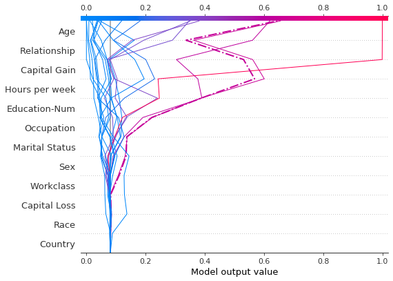
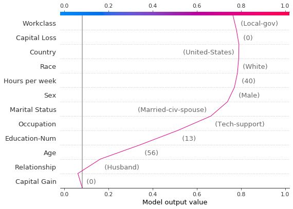
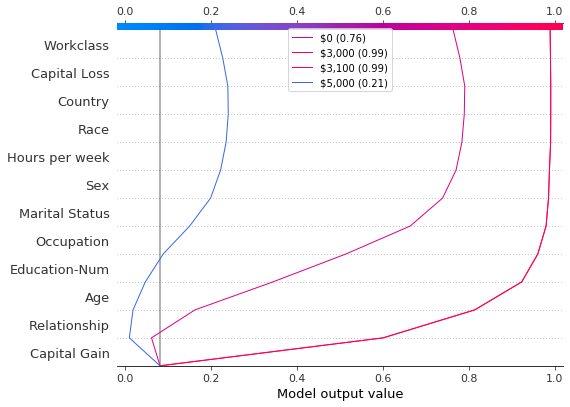
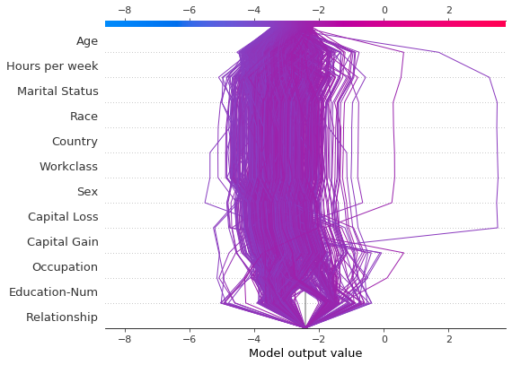
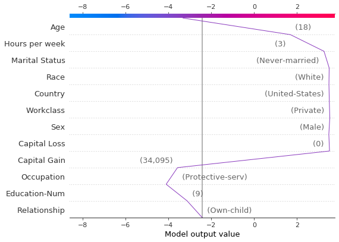
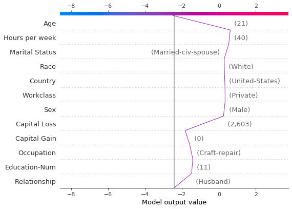
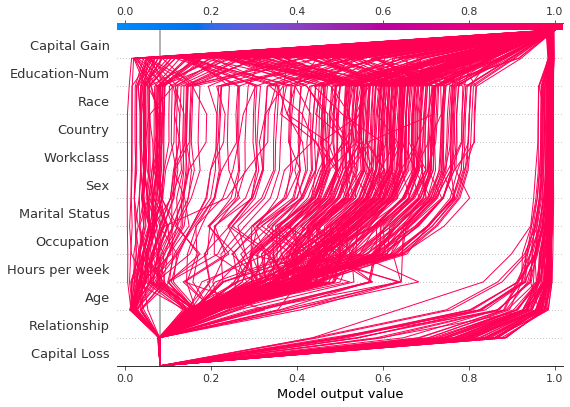
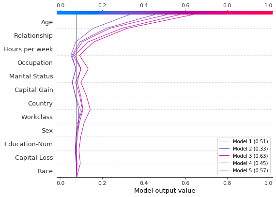
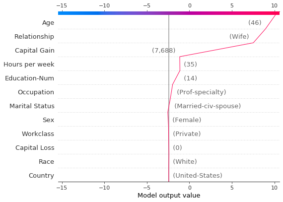

아래 20개 테스트 관찰의 결정 플롯을 참조하세요. 참고: 이 플롯 자체는 유익하지 않습니다. 기본 개념을 설명하기 위해서만 사용합니다. * x축은 모델의 출력을 나타냅니다. 이 경우 단위는 로그 확률입니다. * 플롯은 explainer.expected_value의 x축 중심에 있습니다. 모든 SHAP 값은 선형 모델의 효과가 절편에 상대적인 것처럼 모델의 예상 값에 상대적입니다. * y축은 모델의 특징을 나열합니다. 기본적으로 기능은 중요도를 내림차순으로 정렬됩니다. 중요도는 표시된 관측값에 대해 계산됩니다. 이는 일반적으로 전체 데이터 세트의 중요도 순서와 다릅니다. 특성 중요도 순서 외에도 결정 플롯은 계층적 클러스터 특성 순서 및 사용자 정의 특성 순서도 지원합니다. * 각 관찰의 예측은 컬러 선으로 표시됩니다. 플롯 상단에서 각 선은 해당 관측치의 예측 값에서 x축에 닿습니다. 이 값은 스펙트럼의 선 색상을 결정합니다. * 플롯의 아래쪽에서 위쪽으로 이동하면 각 기능의 SHAP 값이 모델의 기본 값에 추가됩니다. 이는 각 기능이 전체 예측에 어떻게 기여하는지 보여줍니다. * 플롯 하단에서 관측값은 explainer.expected_value에 수렴됩니다.
관찰 내용은 점선 스타일을 사용하여 강조 표시할 수 있습니다. 여기서는 잘못 분류된 관찰을 강조합니다.
# Our naive cutoff point is zero log odds (probability 0.5).y_pred = (shap_values.sum(1) + expected_value) >0misclassified = y_pred != y_test[select]shap.decision_plot(expected_value, shap_values, features_display, link="logit", highlight=misclassified)

잘못 분류된 관측값을 단독으로 플로팅하여 검사해 보겠습니다. 단일 관측치가 플롯되면 해당 기능 값이 표시됩니다. 선의 모양이 변경된 것을 확인하세요. 왜? 이 단일 관찰에 대한 기능 중요도에 따라 y축의 기능 순서가 변경되었습니다. “플롯 간 순서 및 스케일 유지” 섹션에서는 여러 플롯에 동일한 기능 순서를 사용하는 방법을 보여줍니다.
의사결정 플롯에는 여러 가지 사용 사례가 있습니다. 여기서는 몇 가지 사례를 제시합니다. 1. 다양한 기능 효과를 명확하게 보여줍니다. 2. 다중 출력 예측을 시각화합니다. 3. 상호작용의 누적 효과를 표시합니다. 4. 다양한 특성 값에 대한 특성 효과를 탐색합니다. 5. 이상치를 식별합니다. 6. 일반적인 예측 경로를 식별합니다. 7. 여러 모델에 대한 예측을 비교하고 대조합니다.
87.3.1 수많은 기능 효과를 명확하게 보여줍니다.
힘 플롯과 마찬가지로 결정 플롯은 모델의 출력과 관련된 중요한 기능을 보여줍니다. 그러나 중요한 특징이 많이 포함되어 있는 경우 결정 플롯이 힘 플롯보다 더 유용할 수 있습니다. 이를 입증하기 위해 UCI 커뮤니티 및 범죄 데이터 세트에 대해 훈련된 모델을 사용합니다. 이 모델은 101개의 특징을 사용합니다. 아래 두 플롯은 동일한 예측을 설명합니다. 힘 플롯의 수평 형식으로 인해 모든 중요한 특징이 명확하게 표시되지 않습니다. 이와 대조적으로 결정 플롯의 수직 형식은 다양한 기능의 효과를 표시할 수 있습니다.
# Load the prediction from disk to keep the example short.withopen("./data/crime.pickle", "rb") as fl: a, b, c = pickle.load(fl)shap.force_plot(a, b, c, matplotlib=True)
결정 플롯은 다중 출력 모델이 어떻게 예측에 도달하는지 보여줄 수 있습니다. 이 예에서는 UCI 심장병 데이터 세트에 대해 훈련된 Catboost 모델의 SHAP 값을 사용합니다. 질병의 정도를 나타내는 5가지 클래스가 있습니다. 클래스 1은 질병이 없음을 나타냅니다. 클래스 5는 진행된 질병을 나타냅니다.
예제를 짧게 유지하기 위해 SHAP 값은 디스크에서 로드됩니다. heart_base_values 변수는 각 클래스의 SHAP 예상 값 목록입니다. 마찬가지로 heart_shap_values 변수는 SHAP 행렬 목록입니다. 클래스당 하나의 행렬. 이것은 shap.TreeExplainer가 반환하는 다중 출력 형식입니다.
# Load all from disk to keep the example short.withopen("./data/heart.pickle", "rb") as fl: ( heart_feature_names, heart_base_values, heart_shap_values, heart_predictions, ) = pickle.load(fl)class_count =len(heart_base_values)
플롯 범례에 대한 레이블을 생성하는 함수를 만듭니다. 팁: 클래스를 구별하는 데 도움이 되도록 범례 라벨에 예측 값을 포함하세요.
def class_labels(row_index):return [f"Class {i +1} ({heart_predictions[row_index, i].round(2):.2f})"for i inrange(class_count)]
shap.multioutput_decision_plot을 사용하여 관찰 #2에 대한 SHAP 값을 플롯합니다. 플롯의 기본 기준 값은 다중 출력 기본 값의 평균입니다. 정확한 예측을 생성하기 위해 SHAP 값이 그에 따라 조정됩니다. 점선(강조 표시된) 선은 모델의 예측 클래스를 나타냅니다. 이 관찰을 위해 모델은 질병이 존재한다고 확신하지만 클래스 3, 4, 5를 쉽게 구분할 수는 없습니다.
Age 56
Workclass Local-gov
Education-Num 13
Marital Status Married-civ-spouse
Occupation Tech-support
Relationship Husband
Race White
Sex Male
Capital Gain 0
Capital Loss 0
Hours per week 40
Country United-States
Name: 25, dtype: object
참조 관찰의 여러 복사본을 사용하여 합성 데이터 세트를 만듭니다. ‘자본 이득’ 값을 \$0-\$10,000에서 \$100만큼 변경합니다. 해당 SHAP 값을 검색합니다. 이 접근 방식을 사용하면 모델을 평가하고 디버그할 수 있습니다. 분석가는 이 방법이 가상 시나리오를 제시하는 데 유용할 수도 있습니다. 이 예에 표시된 자본 이득에 대한 효과는 참조 레코드에 따라 다르므로 일반화할 수 없다는 점을 명심하십시오.
이 의존성 플롯은 기능 값 범위 전체에 걸쳐 SHAP 값의 변화를 보여줍니다. 이 모델의 SHAP 값은 로그 확률의 변화를 나타냅니다. 이 플롯은 \$5,000 부근에서 SHAP 값에 상당한 변화가 있음을 보여줍니다. 또한 \$0 및 대략 \$3,000에서 몇 가지 중요한 이상값을 보여줍니다.
의존성 플롯은 도움이 되지만 상황에 따라 SHAP 값의 실제 효과를 식별하기는 어렵습니다. 이를 위해 확률 척도에 대한 결정 플롯을 사용하여 합성 데이터 세트를 플롯할 수 있습니다. 먼저, 맥락을 확립하기 위해 참조 관찰을 플롯합니다. 예측 확률은 0.76입니다. 자본 이득은 0이며 모델은 이에 대해 작은 부정적 효과를 할당합니다. 기능은 다음 두 플롯과 일치하도록 수동으로 주문되었습니다.
# The feature ordering was determined via 'hclust' on the synthetic data set. We specify the order here manually so# the following two plots match up.feature_idx = [8, 5, 0, 2, 4, 3, 7, 10, 6, 11, 9, 1]shap.decision_plot( expected_value, hypothetical_shap_values[0], X_display.iloc[idx], feature_order=feature_idx, link="logit",)

이제 합성 데이터를 플로팅합니다. 참조 레코드는 점선으로 표시됩니다. 특징은 유사한 예측 경로를 그룹화하기 위해 계층적 클러스터링을 통해 정렬됩니다. 우리는 실제적인 측면에서 자본 이득의 효과가 크게 양극화되어 있음을 알 수 있습니다. 소수의 예측만이 0.2에서 0.8 사이에 있습니다.
예측을 자세히 조사한 결과 약 \$4,300의 임계값을 찾았지만 예외가 있습니다. \$0, \$3,000 및 \$3,100의 자본 이득은 예상치 못한 높은 예측에 기여합니다. \$5,000의 자본 이득은 예기치 않게 낮은 예측에 기여합니다. 이러한 이상 현상은 각 예측을 식별하는 데 도움이 되는 범례와 함께 여기에 표시됩니다. \$3,000과 \$3,100에 대한 예측 경로는 동일합니다.
def legend_labels(idx):return [rf"\${i *100:,}({hypothetical_predictions[i]:.2f})"for i in idx]show_idx = [0, 30, 31, 50]shap.decision_plot( expected_value, hypothetical_shap_values[show_idx], X, feature_order=feature_idx, link="logit", legend_labels=legend_labels(show_idx), legend_location="upper center",)

87.3.5 이상값 식별
의사결정 도표는 이상값을 식별하는 데 도움이 될 수 있습니다. 비슷한 예측 경로를 가진 관측치를 그룹화하려면 feature_order='hclust'를 지정하세요. 이로 인해 이상값을 더 쉽게 발견할 수 있는 경우가 많습니다. 진폭 예측은 시그모이드 함수에 의해 왜곡되므로 이상치를 그릴 때 ‘link=’logit’’을 사용하지 마세요.
아래 플롯은 확률 범위 [0.03, 0.1]의 모든 예측을 보여줍니다. (0.03보다 작은 예측은 많은 수의 관찰을 나타내기 때문에 이 예에서는 제외됩니다.) 두 가지 예측이 즉시 눈에 띕니다. ‘연령’, ‘자본 손실’, ’자본 이득’의 효과가 가장 두드러집니다.
y_pred = model.predict(X_test) # Get predictions on the probability scale.T = X_test[(y_pred >=0.03) & (y_pred <=0.1)]with warnings.catch_warnings(): warnings.simplefilter("ignore") sh = explainer.shap_values(T)[1]r = shap.decision_plot(expected_value, sh, T, feature_order="hclust", return_objects=True)

SHAP 값을 기준으로 이상값을 찾아 특성 값으로 표시합니다. 이상값은 원본 플롯과 동일한 기능 차수 및 척도를 사용하여 플롯됩니다. 자세한 내용은 “플롯 간 순서 및 척도 유지”를 참조하십시오.
# Find the two observations with the most negative 'Age' SHAP values.idx = np.argpartition(sh[:, T.columns.get_loc("Age")], 2)[0:2]# Plot the observations individually with their corresponding feature values. The plots use the same feature order# as the original plot.for i in idx: shap.decision_plot( expected_value, sh[i], X_display.loc[T.index[i]], feature_order=r.feature_idx, xlim=r.xlim, )


87.3.6 일반적인 예측 경로 식별
결정 플롯은 모델의 일반적인 예측 경로를 노출할 수 있습니다. 여기서는 높은 점수를 받은 예측의 공통점을 확인하기 위해 확률 간격 [0.98, 1.0]의 모든 예측을 플로팅합니다. 유사한 예측 경로를 그룹화하기 위해 `hclust’ 기능 순서를 사용합니다. 플롯은 두 가지 별개의 경로를 보여줍니다. 하나는 ‘자본 이득’에 의해 지배되고 다른 하나는 ’자본 손실’에 의해 지배됩니다. ’관계’, ‘연령’, ’학력’의 효과도 주목할 만합니다.
y_pred = model.predict(X_test) # Get predictions on the probability scale.T = X_test[y_pred >=0.98]with warnings.catch_warnings(): warnings.simplefilter("ignore") sh = explainer.shap_values(T)[1]shap.decision_plot(expected_value, sh, T, feature_order="hclust", link="logit")

87.4 여러 모델에 대한 비교 및 대조 예측
결정 도표는 다양한 모델의 예측을 비교하거나 모델 앙상블의 예측을 해석하는 데 유용합니다. 이 예에서는 UCI Adult Income 데이터 세트에 대해 훈련된 5개의 LightGBM 모델 앙상블의 예측을 플롯합니다. 이 예에서는 5개 모델의 앙상블을 생성하고 ’shap.multioutput_decision_plot’을 사용하여 모델의 예측을 그립니다.
Best score: 0.28279460948508833
Best score: 0.2743920496745268
Best score: 0.2706647518976772
Best score: 0.2809048231217079
Best score: 0.2785044277595166
모델의 기본 값과 SHAP 값을 목록으로 조합합니다. 이는 다중 출력 모델에 대한 shap 패키지의 출력을 모방합니다.
def get_ensemble_shap_values(models, X): base_values = [None] * model_count shap_values = [None] * model_count predictions = [None] * model_countfor i, m inenumerate(models): a = m.predict(X, pred_contrib=True) # `pred_contrib=True` returns SHAP values for LightGBM base_values[i] = a[0, -1] # The last column in the matrix is the base value. shap_values[i] = a[:, 0:-1] predictions[i] =1/ (1+ np.exp(-a.sum(axis=1)[0])) # Predictions as probabilitiesreturn base_values, shap_values, predictions
SHAP 값을 플롯합니다. 범례는 각 모델의 예측을 식별합니다. 팁: 모델을 구별하는 데 도움이 되도록 범례 라벨에 예측 값을 포함하세요.
확률 0.5가 이 이진 분류 작업에 대한 컷오프 값인 경우 이 관찰은 분류하기 어렵다는 것을 알 수 있습니다. 그러나 Model 2는 개인의 연간 소득이 \$50,000 미만이라고 확신합니다. 이것이 예시적인 관찰이라면 이 모델의 예측이 왜 다른지 조사해 볼 가치가 있을 것입니다.
# Create labels for legendlabels = [f"Model {i +1} ({ensemble_predictions[i].round(2):.2f})"for i inrange(model_count)]# Plotshap.multioutput_decision_plot( ensemble_base_values, ensemble_shap_values,0, feature_names=X.columns.to_list(), link="logit", legend_labels=labels, legend_location="lower right",)

87.5 SHAP 상호작용 값
결정 플롯은 여기에 표시된 것처럼 SHAP 상호 작용 값을 지원합니다. 플롯 하단의 ’explainer.expected_value’에 선이 완전히 수렴되지는 않습니다. 이는 교호작용과 주효과를 포함하여 N(N + 1)/2 = 12(13)/2 = 78개의 특징이 있지만 결정 플롯에는 기본적으로 가장 중요한 20개의 특징만 표시되기 때문입니다. 더 많은 기능을 표시하는 방법을 알아보려면 “표시할 기능 선택” 섹션을 참조하세요.
결정 플롯은 3차원 SHAP 상호 작용 구조를 표준 2차원 SHAP 매트릭스로 변환합니다. 또한 해당 기능 레이블을 생성합니다. 이러한 구조는 return_objects=True를 설정하여 결정 플롯에서 검색할 수 있습니다. 이 예에서는 show=False를 설정하여 플롯을 생략합니다.
직접 비교를 용이하게 하기 위해 동일한 기능 순서와 x축 배율을 사용하여 여러 결정 플롯을 만드는 것이 도움이 되는 경우가 많습니다. ’return_objects=True’인 경우 결정 플롯은 후속 플롯에서 사용할 수 있는 플롯 구조를 반환합니다.
# Create the first plot, returning the plot structures.r = shap.decision_plot(expected_value, shap_values, features_display, return_objects=True)
# Create another plot using the same feature order and x-axis extents.idx =9shap.decision_plot( expected_value, shap_values[idx], features_display.iloc[idx], feature_order=r.feature_idx, xlim=r.xlim,)

87.7 표시할 기능 선택
결정 플롯에 표시되는 특징은 ‘feature_order’와 ’feature_display_range’라는 두 가지 매개변수로 제어됩니다. feature_order 매개변수는 표시 전에 기능의 순서를 결정합니다. ’feature_display_range’ 매개변수는 정렬된 기능 중 표시할 기능을 결정합니다. ‘slice’ 또는 ‘range’ 개체를 인수로 사용합니다. ‘feature_display_range’ 매개변수는 지형지물이 오름차순으로 표시되는지 내림차순으로 표시되는지 여부도 제어합니다.
예를 들어, feature_order='importance'(기본값)인 경우 결정 플롯은 표시하기 전에 중요도에 따라 오름차순으로 기능을 정렬합니다. feature_display_range=slice(-1, -21, -1)(기본값)인 경우 플롯에는 마지막(즉, 가장 중요한) 20개의 기능이 내림차순으로 표시됩니다. ‘slice(-1, -21, -1)’ 객체는 “마지막 기능에서 시작하여 끝부터 21번째 기능까지 -1단계로 반복”하는 것으로 해석됩니다. 끝점 -21은 포함되지 않습니다.
feature_display_range 매개변수는 `hclust’ 순서가 적용될 때 특히 중요합니다. 이 경우 중요한 기능 중 상당수가 기능 범위의 시작 부분에 배치됩니다. 그러나 결정 플롯에는 기본적으로 특성 범위의 끝이 표시됩니다.
다음 플롯은 ‘hclust’ 순서를 사용하는 78개의 SHAP 상호 작용 기능 중 처음 10개를 보여줍니다. 참고: 처음 10개의 특징만 표시하기 때문에 관측치는 최종 예측 값에서 x축에 도달하지 않습니다. 스니펫 feature_display_range=range(10, -1, -1)은 특징 10에서 시작하여 -1만큼 -1까지 계산한다는 것을 나타냅니다. 끝점은 범위에 포함되지 않습니다. 따라서 우리는 특성이 10에서 0으로 표시됩니다.
SHAP 값은 모두 일부 기본 값에 상대적입니다. 기본적으로 기본 값은 훈련 데이터에 대한 원시 모델 예측의 평균인 explainer.expected_value입니다.
# The model's training meanprint(model.predict(X_train, raw_score=True).mean().round(4))# The explainer expected valueprint(expected_value.round(4))
-2.4297
-2.4297
원시 예측 값을 얻으려면 ’explainer.expected_value’가 각 관측값의 SHAP 값 합계에 추가됩니다.
# The model's raw prediction for the first observation.print(model.predict(features.iloc[[0]].values, raw_score=True)[0].round(4))# The corresponding sum of the mean + shap valuesprint((expected_value + shap_values[0].sum()).round(4))
-3.1866
-3.1866
따라서 올바른 예측을 생성하려면 explainer.expected_value를 결정 플롯에 제공해야 합니다.
결정 도표에서 기본 값은 도표 하단에 있는 각 예측의 시작 값입니다. explainer.expected_value를 기본 값으로 사용하는 것이 항상 시각적으로 직관적인 것은 아닙니다. 로지스틱 분류 문제를 고려해보세요. 컷오프 값으로 확률 0.4를 선택하면 explainer.expected_value 대신 컷오프 지점에서 예측이 수렴하는 것이 더 합리적일 수 있습니다. 이를 위해 결정 플롯은 new_base_value 인수를 제공합니다. 예측값을 변경하지 않고 SHAP 기본 값을 임의의 지점으로 이동합니다.
이 예에서는 확률 0.4를 새 기본 값으로 지정합니다. 모델의 SHAP 값은 로그 확률이므로 확률을 결정 플롯에 전달하기 전에 로그 확률로 변환합니다. link='logit' 인수는 기본 값과 SHAP 값을 확률로 변환합니다.
p =0.4# Probability 0.4new_base_value = np.log(p / (1- p)) # the logit functionshap.decision_plot( expected_value, shap_values, features_display, link="logit", new_base_value=new_base_value,)